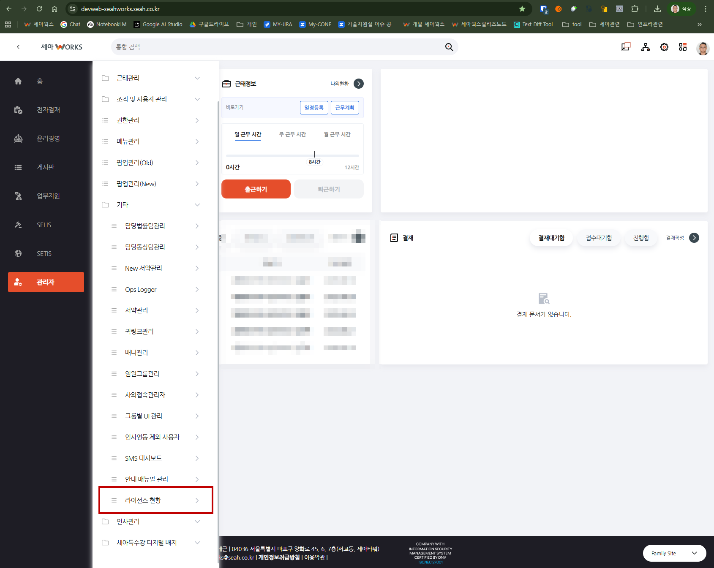
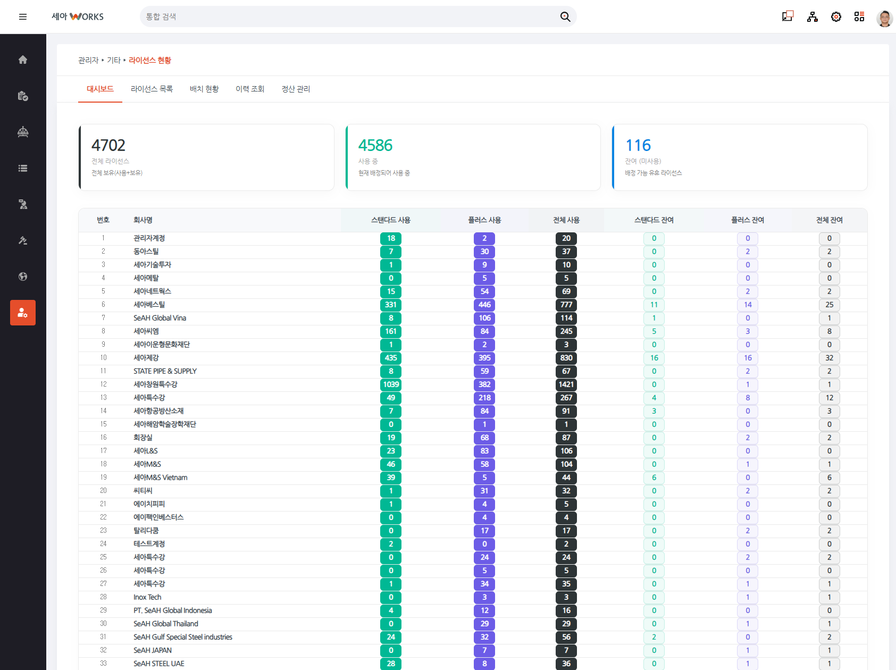
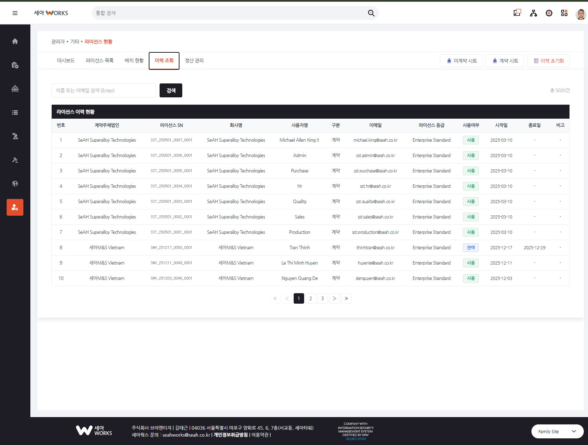
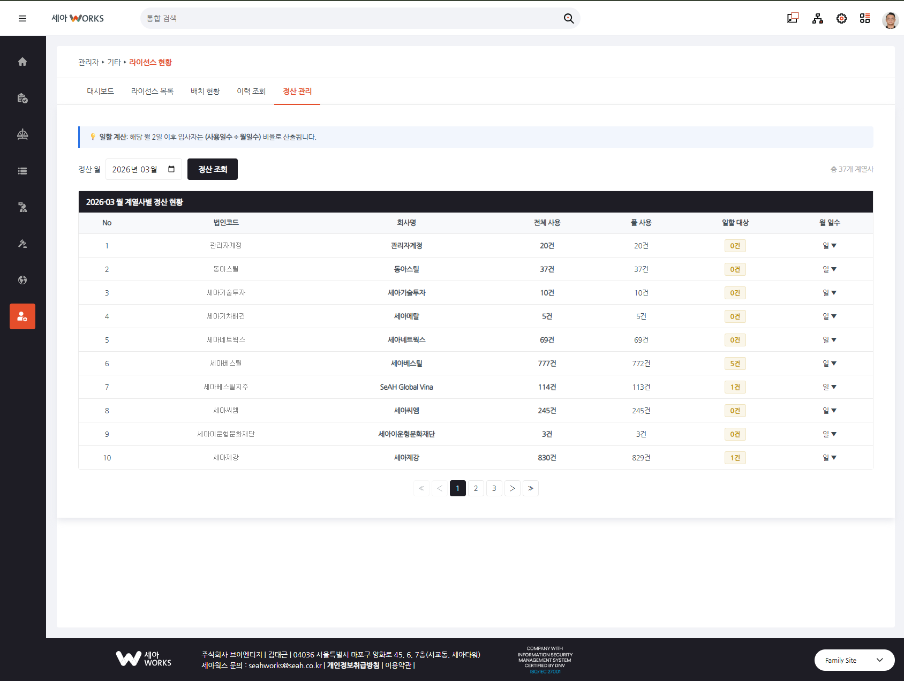
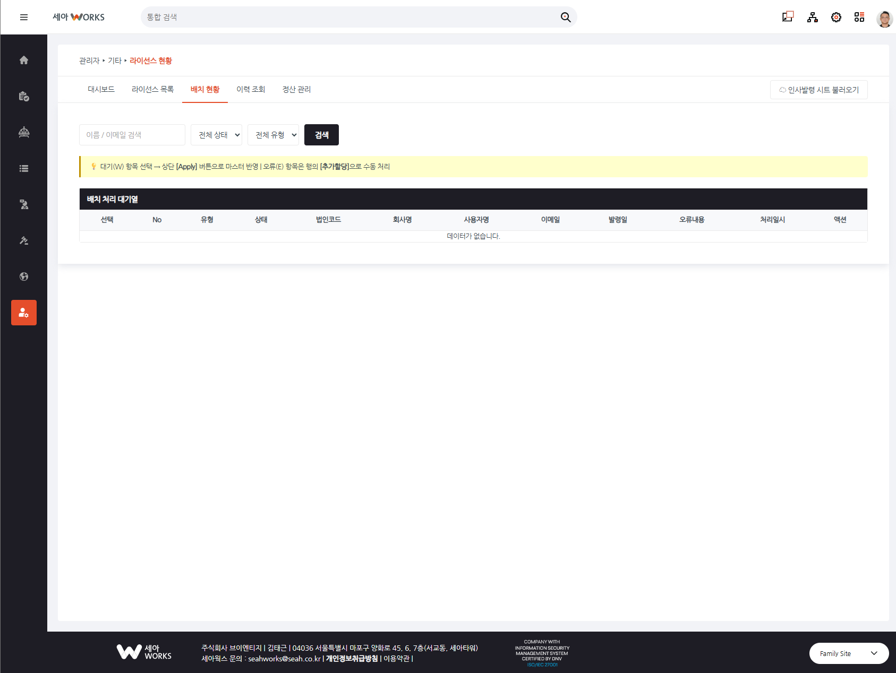
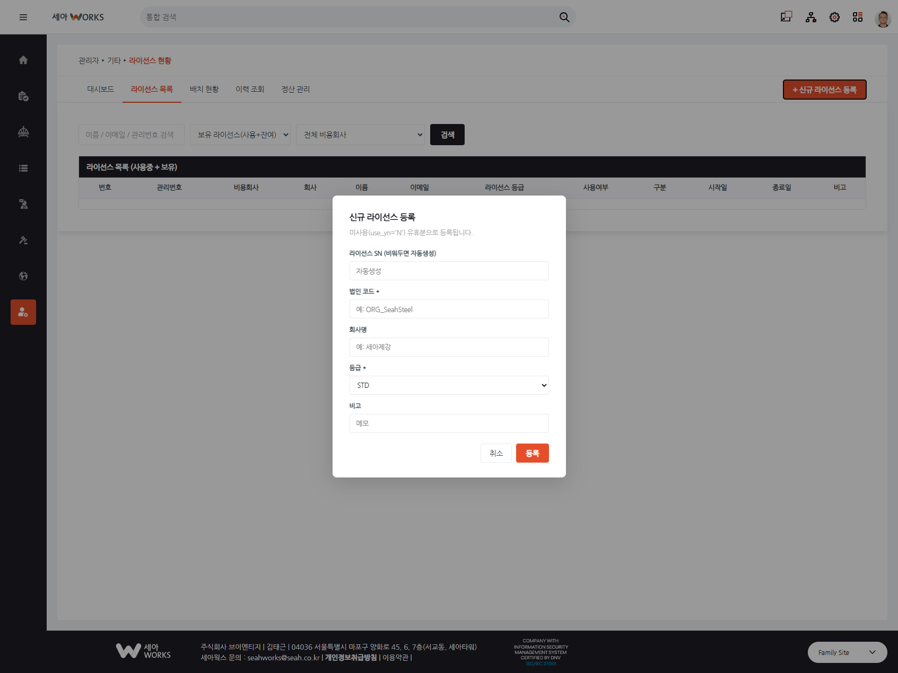

구글 워크스페이스 라이선스, 스프레드시트 수작업에서 벗어나 시스템으로 관리합니다
Problem
세아그룹 계열사 수십 개의 GWS 라이선스를 관리자가 매주 구글 시트를 직접 열어 수동으로 처리하고 있었습니다. 인사발령이 생길 때마다 시트를 확인하고, 라이선스 할당·회수를 손으로 기입하고, 월말에는 다시 엑셀로 정산하는 3중 반복 작업이었습니다.
인사발령마다 구글 시트를 수동 확인 → 라이선스 직접 기입 → 실수 발생 시 추적 불가
계열사별 사용 라이선스를 월마다 수동 집계, 일할 계산을 엑셀 수식으로 직접 처리
누가 언제 라이선스를 할당/회수했는지 기록이 없어 문제 발생 시 원인 파악 어려움
매주 목요일 22시, 인사발령 시트를 자동으로 읽어 DB에 적재 — 관리자는 승인만
일할 계산 포함 월별 정산이 자동으로 집계, 버튼 하나로 계열사별 엑셀 다운로드
할당·회수·수정·마이그레이션 모든 변경 이력을 DB에 기록, 이메일로 검색 가능
How It Works
인사발령 정보가 담긴 구글 시트 하나에서 시작합니다. 시스템이 이를 읽어 할당·회수를 처리하고, 이력을 남기며, 정산까지 계산합니다.
User Guide
현재 1~3번 화면이 구현 완료되었습니다. 4번(이력 조회), 5번(정산 관리)은 개발 중입니다.
접속하면 가장 먼저 보이는 화면입니다. 전체 라이선스 현황을 한 눈에 파악할 수 있습니다.

전체 라이선스를 조건별로 필터링하여 상세 내역을 확인하고, 비고를 수정할 수 있습니다.

구글 시트에서 수집된 인사발령 건을 확인하고, 검토 후 라이선스에 반영(Apply)하는 화면입니다. 이 단계가 자동화의 핵심입니다.


삭제된 데이터까지 포함하여 모든 라이선스 변경 내역을 이메일 키워드로 검색할 수 있는 화면입니다.

월말 정산 업무를 위한 화면입니다. 연월을 선택하면 계열사별 라이선스 사용 금액을 자동 계산해줍니다.

Features
전체 라이선스 현황과 계열사별 분포를 KPI 카드와 테이블로 즉시 확인
매주 목요일 22시, 인사발령 구글 시트를 자동으로 읽어 DB 대기열에 적재
자동 수집된 발령 건을 관리자가 확인하고 한 번의 클릭으로 라이선스 반영
할당·회수·수정 모든 변경이력을 기록, 이메일 검색으로 언제든 조회
일할 계산 포함 월별 정산 자동화, 계열사별 정산 내역서 엑셀 다운로드
라이선스 부족 등 자동 처리 실패 건을 관리자가 수동으로 지정하여 해결
Expected Impact
수작업으로 처리하던 반복 업무를 시스템이 대신 처리합니다.
기존
시스템 도입 후
Tech Stack